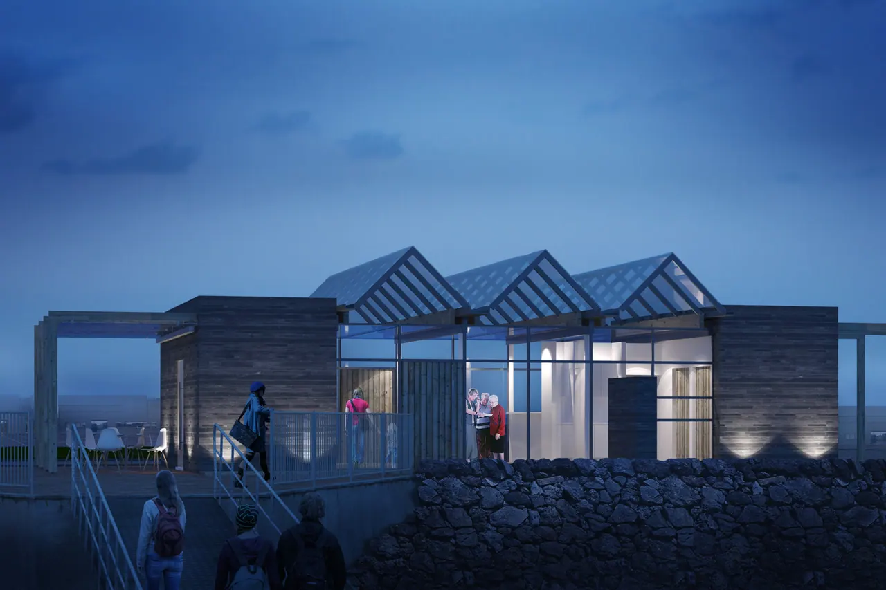
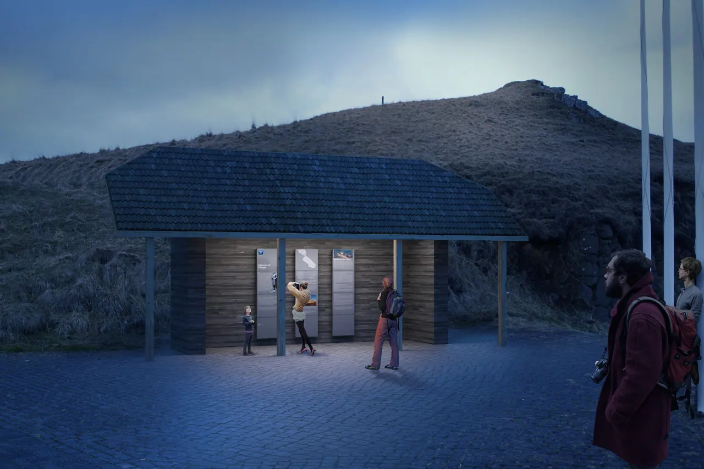

New ferry terminal and shelter
Year
2014–
Sector (proposed)
Energy, infrastructure and mobility
Competition
1st prize, open competition
Project
Hornsteinar architects were awarded 1st price in an open competition for designing a new ferry terminal and shelter for the passenger ferry to Viðey island. The competition was held by the city of Reykjavík in cooperation with the Association of Icelandic architects. Press the link to read the jury´s review of the proposals.
